Introduction to Meta-analysis and Bias-detection tests
0HM350 Metascience
Eindhoven University of Technology
2026-02-09
Scan QR code for slides

Lecture objective
By the end of this lecture, you should be able to interpret:
Meta-analysis results
Between-study heterogeneity
Subgroup/Meta-regression analysis
Bias-detection tests
The Research Question
What is your research question?
Suppose you are a researcher working for a government ministry
You need to gather evidence to make an informed decision about the efficacy of an intervention
You conduct a systematic search of the published literature to identify all relevant studies
But…which ones?
Which studies and effect size should we select?
The ones that are central to the research question
A meta-analysis aims to combine studies that are fairly “similar”.
Imagine the absurd scenario where a researcher combines:
- studies on the effect of yoga on stress levels, and
- studies on the effect of a medication on stress levels
Avoid combining “apples and oranges”
How do we make sure we select similar studies?
The PICOS framework
The PICOS framework is used to formulate a focused research question for a systematic review or meta-analysis.
It helps create a clear, answerable question by breaking it down into four key components
Population/Patient, Intervention, Comparison/Control, Outcome and Study Design
The PICO framework
Population: What kind of participants do studies have to include to be eligible for a meta-analysis?
Intervention: What kind of intervention do studies have to examine?
Comparator: What kind of control group do studies have to use? A control group receiving a placebo? Waitlists? Another intervention? Nothing at all?
Outcome: What kind of outcome do studies have to measure? Systolic blood pressure? Dyastolic blood pressure? Mortality?
Study design: Which study designs are eligible? Randomized Controlled Trials (RCTs), pre-post, etc. Different study designs require different effect-size calculations
Effect sizes
What do we need to conduct a meta-analysis?
Effect size (or the information to compute it) for each study
Standardized (e.g., Cohen’s \(d\) or Pearson’s \(r\))
Non-standardized (mean difference, odds ratio (\(OR\))
Sampling variance (or standard error) of each effect size
Types of effect sizes
The formulas for calculating effect sizes and their variances depend on:
- The type of effect size: \(d_s\), \(d_z\), \(r\), etc.
- The study design (e.g., within-subject design, between-subject, split-plot)
See Jané et al. (2023) for a guide to calculating effect and variances across different study designs
Calculating Cohen’s \(d_s\) effect size (between-subject)
Standardized effect size (Cohen’s \(d_s\)): \[ d_s = \frac{ \bar{x}_1 - \bar{x}_2 }{SD_{pooled}}\]
Cohen’s \(d_s\) variance: \[V_d = \frac{ n_1 + n_2 }{n_1n_2} + \frac{ d^2 }{2(n_1n_2)}\]
Raw data
Mean and SD for each group
Sample size
| study_id | exp_mean | exp_sd | exp_n | con_mean | con_sd | con_n |
|---|---|---|---|---|---|---|
| study_1 | 12.4 | 3.2 | 50 | 10.1 | 3.5 | 50 |
| study_2 | 15.2 | 4.1 | 40 | 13.8 | 3.9 | 42 |
| study_3 | 8.7 | 2.8 | 60 | 7.9 | 2.6 | 58 |
| study_4 | 21.3 | 5.2 | 35 | 18.6 | 4.8 | 37 |
Calculating effect sizes
We can calculate effect sizes using:
Functions from the
metapackage (see Figure 1).Note that these functions calculate the effect sizes and perform the meta-analysis.
- The
escalc()function from themetaforpackage, which calculates effect sizes without fitting a meta-analytic model.
Functions from meta
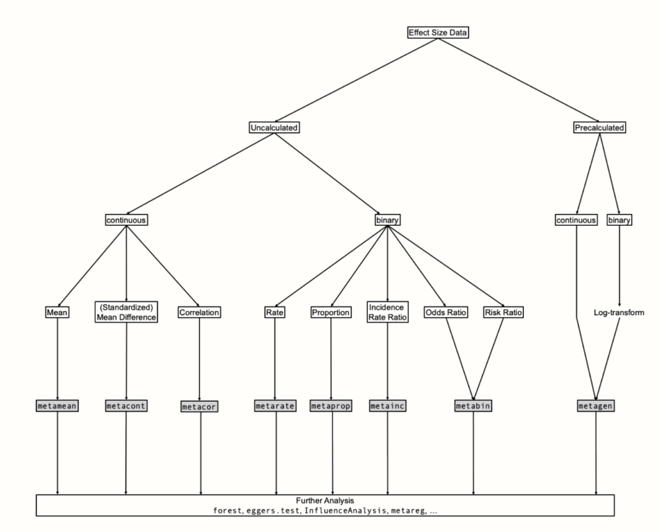
meta package. Obtained from Harrer et al. (2021)
The basics of Meta-analysis
Plotting the effect sizes
Suppose we have identified 20 studies in our systematic review
You might have notice that effect sizes vary across studies
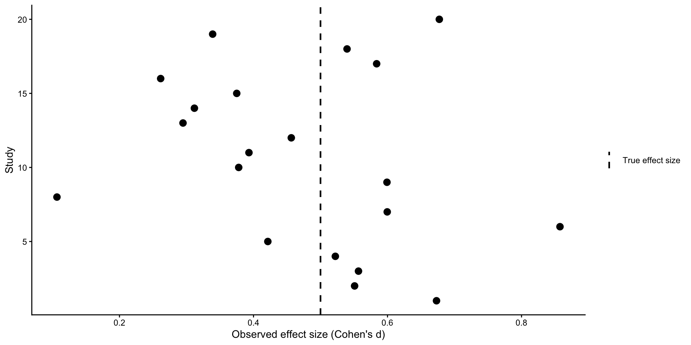
Why do effect sizes differ across studies?
Individual studies provide estimates of the true effect size (\(\widehat{\theta}\))
By combining estimates from multiple studies, we can obtain a more precise estimate of the true effect size
Why does \(\widehat{\theta}\) differ from \(\theta\)?
\[\theta = \widehat{\theta}_k + \epsilon_k\] where k refers to individual studies and \(\epsilon_k\) is the sampling error
Effect size estimate and sampling error
It is therefore desirable that the effect size estimate \(\widehat{\theta}_k\) of study k is as close as possible to the true effect size, and that \(\epsilon_k\) is minimal.
Sampling error (\(\epsilon\))
Studies with larger sample sizes have smaller \(\epsilon\)
A common way to quantify \(\epsilon\) is through the Standard Error (\(SE\)) \[SE = \frac{SD}{\sqrt{N}}\]where \(SD\) is the standard deviation and \(N\) is the study sample size
Standard error as a function of sample size
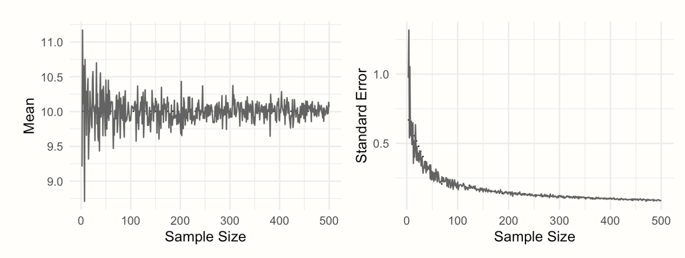
The smaller SE, the more accurate the effect size estimate
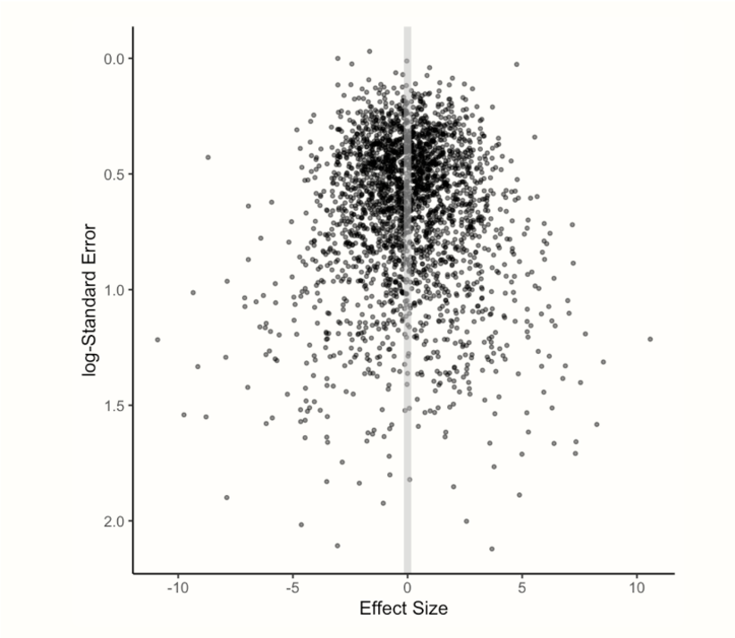
A meta-analysis is not only the average of effect sizes
It weights effect sizes to assign greater influence to studies with smaller \(SE\) and therefore greater statistical precision
Statistical precision refers to how accurately a study estimates the true effect size
The larger the sample size of studies included in a meta-analysis (\(N\)) and the larger the number of studies (k), the greater the statistical precision of the meta-analysis
Type of meta-analyses
Fixed-Effect (FE) meta-analysis
It assumes that one true effect size underlies all the studies in the meta-analysis, thus the term “Fixed Effect”
Any differences in observed effects are due to sampling error \[\theta_k = \theta + \epsilon_k \]
where \(\theta_k\) is the study effect size, \(\theta\) is the true effect size and \(\epsilon_k\) is the study sampling error
- Assumption of independent effect sizes
FE meta-analysis
A FE meta-analysis simply use a weighted average of all studies to calculate the pooled effect size
The weight of an individual study (\(w_k\)) is calculated as:
\[w_k = \frac{1}{SE^2_k}\]
The pooled effect size (\(\widehat{\theta}\)) is calculated as:
\[\widehat{\theta} = \frac{\sum_{k=1}^{K}\widehat{\theta_k} w_k}{\sum_{k=1}^{K} w_k}\]
Random-Effect (RE) or two-level meta-analysis
Assumption of independent effect sizes
Unlike the FE meta-analysis, the RE meta-analysis recognizes two levels of variation:
Within-study variation due to sampling error (\(\epsilon_k\))
Between-study heterogeneity (\(\zeta_k\))
Sources of variation
Level 1: Sampling error (within-study variation) \[ \widehat{\theta_k} = \theta_k + \epsilon_k \]
where \(\theta_k\) is the study effect size, \(\theta_k\) is the true effect size of one single study k and \(\epsilon_k\) is the study sampling error
Level 2: Between-study variation \[ \theta_k = \mu + \zeta_k \]
where \(\theta_k\) is the study effect size, \(\mu\) is the mean of the distribution of true effect sizes and \(\zeta_k\) is the deviation of study \(k\)’s true effect from \(\mu\)
RE Meta-analysis
Combining the two levels gives: \[ \widehat{\theta_k} = \mu + \zeta_k + \epsilon_k\]
The model therefore separates sampling error from between-study variation
This second source of variation allows us to quantify between-study heterogeneity
What is between-study heterogeneity?
Between-study heterogeneity refers to differences in the true effect sizes across studies
Studies may differ in their participants, interventions, comparators, outcomes, settings, or other characteristics
Heterogeneity is important because it tells us whether the studies are estimating a common effect or different effects
RE Meta-analysis
- The weight of an individual study (\(w_k\)) is: \[ w_k = \frac{1}{SE^2_K + \tau^2} \]
- The pooled effect size is calculated as follows: \[\widehat{\theta} = \frac{\sum_{k=1}^{K}\widehat{\theta_k} w_k}{\sum_{k=1}^{K} w_k}\]
Multi-level or three-level meta-analysis
Does not assume that all effect sizes are independent
A common source of dependency is multiple effect sizes extracted from the same study
Multilevel models can account for the hierarchical structure of the data
For more information, see Chapter 10 of Doing a Meta-analysis in R
Doing a meta-analysis in R
First we need a dataset
We will use the metadat::dat.baskerville2012 dataset. It contains 23 studies on the effectiveness of practice facilitation interventions within the primary care practice setting. The meta-analysis is available here
author | year | score | design | alloconc | blind | itt | fumonths | retention | country | outcomes | duration | pperf | meetings | hours | tailor | smd | se |
|---|---|---|---|---|---|---|---|---|---|---|---|---|---|---|---|---|---|
Kottke et al. | 1,992 | 6 | cct | 0 | 1 | 1 | 19 | 83 | US | 2 | 18 | 5.5 | 30 | 1.0 | 1 | 1.01 | 0.52 |
McBride et al. | 2,000 | 6 | rct | 0 | 0 | 0 | 18 | 100 | US | 4 | 12 | 5 | 1.0 | 1 | 0.82 | 0.46 | |
Stange et al. | 2,000 | 6 | rct | 0 | 0 | 0 | 24 | US | 35 | 12 | 20.0 | 4 | 1.5 | 1 | 0.59 | 0.23 | |
Lobo et al. | 2,004 | 6 | rct | 1 | 0 | 0 | 21 | 57 | NL | 16 | 21 | 5.0 | 15 | 1.0 | 1 | 0.44 | 0.18 |
Roetzhiem et al. | 2,005 | 6 | crct | 0 | 1 | 0 | 24 | 100 | US | 3 | 24 | 4.0 | 4 | 1.0 | 0 | 0.84 | 0.29 |
The function metagen()
We use the
metagen()function because the dataset contains precalculated effect sizes and their standard errorsThe appropriate function depends on:
The type of effect size
Whether the effect sizes need to be calculated from the raw study data
See Section 4.5 for an overview of the different functions
metagen() output
Number of studies: k = 15
95% CI z p-value
Common effect model 0.5631 [0.4280; 0.6982] 8.17 < 0.0001
Random effects model 0.5958 [0.4355; 0.7561] 7.28 < 0.0001
Prediction interval [0.2468; 0.9448]
Quantifying heterogeneity (with 95% CIs):
tau^2 = 0.0198 [0.0000; 0.1572]; tau = 0.1407 [0.0000; 0.3965]
I^2 = 14.7% [0.0%; 52.5%]; H = 1.08 [1.00; 1.45]
Test of heterogeneity:
Q d.f. p-value
16.42 14 0.2886
Details of meta-analysis methods:
- Inverse variance method
- Restricted maximum-likelihood estimator for tau^2
- Q-Profile method for confidence interval of tau^2 and tau
- Calculation of I^2 based on Q
- Prediction interval based on t-distribution (df = 14)Reporting the main result
[1] 0.5957733[1] 0.4354568[1] 0.7560898[1] 3.248342e-13The estimated pooled effect size was Cohen’s \(d_s\) = 0.6, 95% CI [0.44, 0.76], \(p\) = 3.25e-13
Forest plot
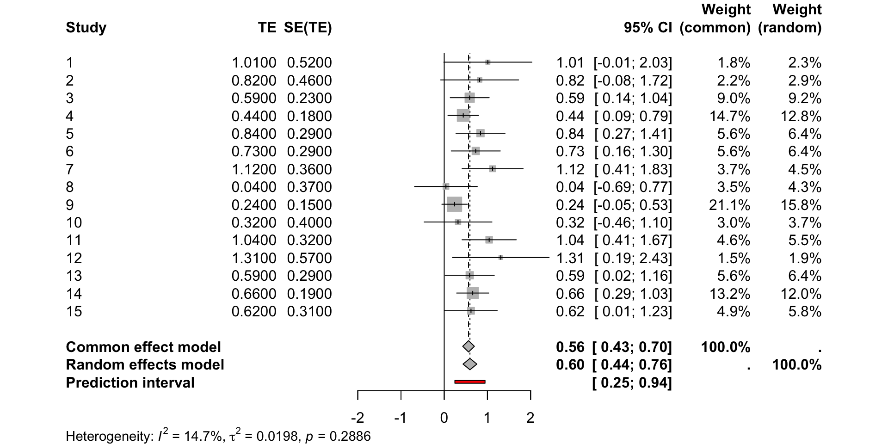
Between-study heterogeneity
What does between-study heterogeneity look like?

Cochran’s Q
The Q-test assesses whether the observed variation in effect sizes is greater than would be expected from sampling error alone
The Q-statistic increases both when the number of studies k increases, and when the precision (the sample size N of a study)
Whether the Q-test is significant highly depends on the size of the meta-analysis and thus its statistical power
If the Q-test returns a \(p\)-value smaller than 0.05, we reject the null hypothesis that the observed variation in effect sizes can be explained by sampling error alone
Reporting Cochran’s Q
[1] 16.41615NULL[1] 0.2886265The \(Q\)-test was nont significant, \(Q\)(14) = 16.42, \(p\) = 0.289. Thus, we fail to reject the null hypothesis that the observed variation in effect sizes can be attributed to sampling error alone.
\(I^2\)
- It measures the percentage of variability not caused by sampling error.
\[I^2 = \frac{Q - (K - 1)}{Q}\]
It is insensitive to the number of studies
If studies become increasingly large, the sampling error tends to zero, while at the same time, \(I^2\) tends to 100% simply because the studies have a greater sample size.
Interpreting \(I^2\)
- As a rough guide, Higgins and Thompson (2002) suggest:
- 25% → low heterogeneity
- 50% → moderate heterogeneity
- 75% → high heterogeneity
Reporting \(I^2\)
The estimated \(I^2\) was 15%, indicating low between-study heterogeneity according to Higgins et al. (2002).
\(\tau^2\) and \(\tau\)
- \(\tau^2\) is the variance of the distribution of true effect sizes across studies
- \(\tau\) is the corresponding standard deviation
- \(\tau\) is expressed on the same scale as the effect size
- Unlike \(I^2\), \(\tau\) provides information about the absolute magnitude of between-study heterogeneity
- Taking the square root of \(\tau^2\) results in \(\tau\), which is the standard deviation of the true effect sizes
- It is hard to interpret. How do we interpret if \(\tau_2\) = 0.1 is observed?
Reporting \(\tau^2\) and \(\tau\)
Prediction Interval (PI)
A prediction interval (PI) indicates the range in which the true effect of a future study is expected to fall
It incorporates both: a) uncertainty around the pooled effect size and b) between-study heterogeneity
If the PI includes both beneficial and harmful effects, the intervention’s effect may differ substantially across settings
Reporting Prediction Intervals
[1] 0.246796[1] 0.9447505The 95% prediction interval was [0.25, 0.94]. This represents the range in which the true effect of a new, similar study would be expected to fall, accounting for between-study heterogeneity.
What causes between-study heterogeneity?
Between-study heterogeneity can arise because studies differ in characteristics that modify the effect.
Examples include: Risk of bias, Sex, Dose, Age, Type of intervention, etc.
These characteristics are often called moderators.
Explaining between-study heterogeneity
If studies differ in their true effects, we can investigate potential moderators:
Subgroup analysis — for categorical moderators
Meta-regression — for continuous or categorical moderators
Important
Moderator analyses should be based on theoretical or substantive grounds, not conducted simply because heterogeneity is statistically significant.
Subgroup analysis
A subgroup analysis compares pooled effects across categories of a moderator
We therefore need a categorical moderator
Rows: 23
Columns: 18
$ author <chr> "Kottke et al.", "McBride et al.", "Stange et al.", "Lobo et…
$ year <int> 1992, 2000, 2000, 2004, 2005, 2008, 2008, 2010, 1992, 1998, …
$ score <int> 6, 6, 6, 6, 6, 6, 6, 6, 7, 7, 7, 7, 8, 8, 9, 9, 9, 9, 9, 9, …
$ design <chr> "cct", "rct", "rct", "rct", "crct", "cct", "cct", "rct", "rc…
$ alloconc <int> 0, 0, 0, 1, 0, 0, 0, 0, 0, 0, 1, 0, 0, 1, 1, 1, 1, 1, 1, 1, …
$ blind <int> 1, 0, 0, 0, 1, 0, 1, 1, 0, 0, 0, 1, 1, 0, 1, 1, 0, 1, 1, 1, …
$ itt <int> 1, 0, 0, 0, 0, 1, 0, 0, 0, 0, 1, 0, 0, 1, 1, 0, 1, 0, 1, 1, …
$ fumonths <int> 19, 18, 24, 21, 24, 6, 18, 26, 3, 12, 12, 9, 12, 21, 12, 18,…
$ retention <dbl> 83.0, 100.0, NA, 57.0, 100.0, 87.0, 89.0, 86.0, 79.0, 100.0,…
$ country <chr> "US", "US", "US", "NL", "US", "Can", "US", "US", "Aus", "UK"…
$ outcomes <int> 2, 4, 35, 16, 3, 26, 4, 11, 2, 1, 7, 1, 16, 10, 4, 5, 10, 13…
$ duration <int> 18, 12, 12, 21, 24, 12, 18, 26, 2, 12, 5, 9, 21, 3, 12, 12, …
$ pperf <dbl> 5.5, NA, 20.0, 5.0, 4.0, 11.0, 3.0, 6.0, 40.0, 13.0, NA, 6.0…
$ meetings <dbl> 30.0, 5.0, 4.0, 15.0, 4.0, 12.0, 3.0, 4.5, 2.0, 3.0, 5.0, 18…
$ hours <dbl> 1.00, 1.00, 1.50, 1.00, 1.00, 1.50, 6.00, 6.00, 0.25, 1.00, …
$ tailor <int> 1, 1, 1, 1, 0, 1, 1, 1, 0, 0, 1, 1, 1, 1, 0, 1, 1, 1, 0, 1, …
$ smd <dbl> 1.01, 0.82, 0.59, 0.44, 0.84, 0.73, 1.12, 0.04, 0.24, 0.32, …
$ se <dbl> 0.52, 0.46, 0.23, 0.18, 0.29, 0.29, 0.36, 0.37, 0.15, 0.40, …Choosing a moderator
For our subgroup analysis, we will use the
blindvariableIt refers to whether the participants were blinded to the intervention
This is a common moderator because blinding can mitigate several sources of bias which, if left unchecked, can quantitively affect study outcomes
Subgroup analysis
- The test of interest is the
Test for subgroup differences - This \(Q\)-test is an omnibus test. It tests the null hypothesis that all subgroup effect sizes are equal, and is significant when at least two subgroups, or combinations thereof, differ.
- There are two:
common effect modelandrandom effects model
Reporting subgroup analysis
Number of studies: k = 23
95% CI z p-value
Common effect model 0.5291 [0.4217; 0.6364] 9.66 < 0.0001
Random effects model 0.5600 [0.4322; 0.6877] 8.59 < 0.0001
Quantifying heterogeneity (with 95% CIs):
tau^2 = 0.0205 [0.0000; 0.1200]; tau = 0.1431 [0.0000; 0.3464]
I^2 = 20.2% [0.0%; 52.0%]; H = 1.12 [1.00; 1.44]
Test of heterogeneity:
Q d.f. p-value
27.55 22 0.1910
Results for subgroups (common effect model):
k 95% CI Q I^2
blind = 1 14 0.5171 [0.3663; 0.6680] 16.36 20.5%
blind = 0 9 0.5413 [0.3884; 0.6942] 11.15 28.2%
Test for subgroup differences (common effect model):
Q d.f. p-value
Between groups 0.05 1 0.8255
Within groups 27.50 21 0.1548
Results for subgroups (random effects model):
k 95% CI tau^2 tau
blind = 1 14 0.5443 [0.3696; 0.7191] 0.0208 0.1444
blind = 0 9 0.5869 [0.3885; 0.7854] 0.0284 0.1686
Test for subgroup differences (random effects model):
Q d.f. p-value
Between groups 0.10 1 0.7522
Details of meta-analysis methods:
- Inverse variance method
- Restricted maximum-likelihood estimator for tau^2
- Q-Profile method for confidence interval of tau^2 and tau
- Calculation of I^2 based on QThe test for subgroup differences was not significant, \(Q\)(1) = 0.05, \(p\) = 0.826, indicating that the null hypothesis of no differences in effect sizes between subgroups could not be rejected
Subgroup forest plot
We can use the forest() function to visualize the effect sizes and pooled estimates for each subgroup.
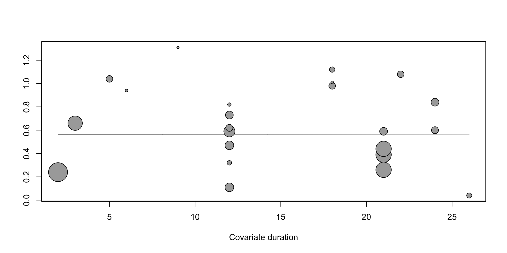
Meta-regression
Meta-regression examines whether moderators are associated with differences in effect sizes
Unlike subgroup analysis, meta-regression can be used with continuous or categorical moderators
Meta-regression
We can perform a meta-regression using the metareg() function
term | estimate | std.error | statistic | p.value |
|---|---|---|---|---|
intercept | 0.56500107068 | 0.148564780 | 3.803062008 | 0.0001429186 |
duration | 0.00003143757 | 0.009017825 | 0.003486159 | 0.9972184535 |
Intercept: the estimated pooled effect size
Duration: estimated change in the effect size for a one-unit increase in duration
Interpretation of the meta-regression
Duration is not a statistically significant predictor of the effect size (\(p\) = 0.997). The slope of the meta-regression (\(\beta\) = 0) is not significantly different from zero, indicating that the estimated effect size does not significantly change as intervention duration increases. Thus, longer interventions do not appear to be more effective than shorter interventions.
Bubble plot
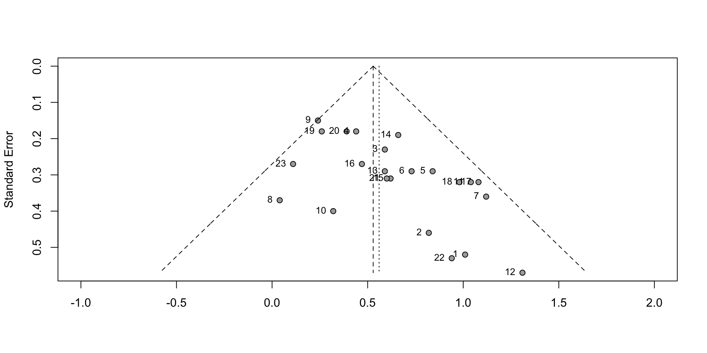
Interpreting bubble plots
- Each bubble represents a study
- The bubble size reflects the study’s precision
- The intercept is the estimated effect size
- The slope indicates how the estimated effect size changes as the moderator increases
- A positive slope would indicate that longer interventions increase the effectiveness of the intervention; A negative slope would indicate that longer interventions are associated with lower effectiveness; A flat slope indicates no association between intervention duration and effectiveness
Threats to validity of meta-analysis
Selection bias
Violating the assumption of independence
Ignoring outliers
Publication bias
Publication bias occurs when the probability of a study being published depends on its results
Studies with statistically significant or favorable results may be more likely to be published than studies with null or unfavorable results
This can distort the scientific literature because unpublished findings cannot be included in a meta-analysis
As a result, the estimated effect size may be overestimated
Small-study effects refer to a broader pattern in which smaller studies tend to show different, often larger, effects than larger studies.
- Publication bias is one possible explanation for small-study effects, but small-study effects can also arise for other reasons.
Funnel plot
- In the absence of small-study effects, studies should roughly follow the funnel-shaped pattern shown in the plot

Interpreting the Funnel plot
The pattern appears asymmetrical in the Funnel plot. This is because several small studies have very large effect sizes in the bottom-right corner (Studies 2, 22, 1 and 12)
There are no comparable studies in the bottom-left corner to “balance out” these large effects
This asymmetry may therefore indicate small-study effects, although other explanations are also possible
Contour-enhanced funnel plots
- Similar to a standard funnel plot, but includes shaded regions indicating different levels of statistical significance
- These contours help assess whether the asymmetry in the funnel plot is related to statistical significance
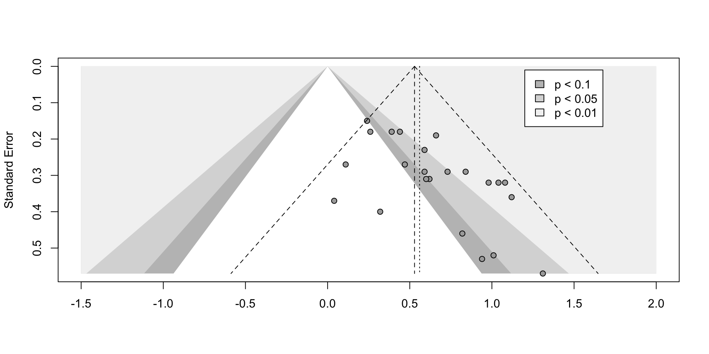
Other causes of asymmetry
Between-study heterogeneity: Funnel plots assume that the dispersion of effect sizes is due to sampling error. However, the studies may estimate different underlying true effects, which can produce asymmetry
Differences in study quality: smaller studies may be more susceptible to bias and therefore report larger effect sizes. This can also lead to funnel plot asymmetry, even when there is no publication bias
- Chance: It is possible that funnel plot asymmetry simply occurs by chance
Trim & Fill method
It adjusts for funnel plot asymmetry by imputing “missing” effects until the funnel plot is symmetric
The pooled effect size of the resulting “extended” data set then represents the estimate when correcting for small-study effects
Number of studies: k = 30 (with 7 added studies)
95% CI z p-value
Random effects model 0.4565 [0.3217; 0.5914] 6.64 < 0.0001
Quantifying heterogeneity (with 95% CIs):
tau^2 = 0.0469 [0.0055; 0.2427]; tau = 0.2167 [0.0742; 0.4927]
I^2 = 40.0% [7.0%; 61.3%]; H = 1.29 [1.04; 1.61]
Test of heterogeneity:
Q d.f. p-value
48.35 29 0.0135
Details of meta-analysis methods:
- Inverse variance method
- Restricted maximum-likelihood estimator for tau^2
- Q-Profile method for confidence interval of tau^2 and tau
- Calculation of I^2 based on Q
- Trim-and-fill method to adjust for funnel plot asymmetry (L-estimator)Interpreting trimfill output
The trim and fill method added a total of 7 studies
The corrected effect corresponds to a Cohen’s \(d_s\) = 0.46. This is still significant, but lower than the effect of \(d_s\) =0.56 initially calculated for
metaAn important caveat pertaining to the trim-and-fill method is that it does not produce reliable results when the between-study heterogeneity is large
Egger’s regression test
Egger’s rest can only identify small-study effects
When using Egger’s test, however, we are not interested in the size and significance of the regression coefficient (\(\beta_1\)), but in the intercept (\(\beta_0\))
If \(\beta_0\) differs significantly from zero, Egger’s test indicates funnel plot asymmetry
Egger’s regression test
Linear regression test of funnel plot asymmetry
Test result: t = 3.48, df = 21, p-value = 0.0022
Bias estimate: 1.9330 (SE = 0.5550)
Details:
- multiplicative residual heterogeneity variance (tau^2 = 0.8316)
- predictor: standard error
- weight: inverse variance
- reference: Egger et al. (1997), BMJThe intercept was 0.05, which was significantly different from zero, \(t\) = 3.48, \(p\) = 0.00222. This indicates funnel plot asymmetry, consistent with small-study effects.
PET-PEESE
PET-PEESE combines two methods:
The precision-effect test (PET)
The precision-effect estimate with standard error (PEESE)
Both methods use a meta-regression to account for small-study effects
We first run PET and examine whether its intercept is significantly larger than zero. If we reject the null hypothesis, we we use the intercept of PEESE as the true effect size estimate
If PET’s intercept is not significantly larger than zero, we remain with the PET estimate
PET (Precision-Effect Test)
term | estimate | std.error | statistic | p.value |
|---|---|---|---|---|
intercept | 0.05192168 | 0.1598933 | 0.3247271 | 0.745387599 |
se | 1.93303035 | 0.6085717 | 3.1763396 | 0.001491462 |
The intercept of PET is 0.05 and it is not statistically different from 0 (\(p\) = 0.745). Therefore, we fail to reject the null hypothesis that the PET intercept is equal to 0 and use the PET estimate as the corrected effect size.
PEESE (Precision-Effect Estimate with Standard Error)
If the PET intercept is statistically significantly different from 0, we use the PEESE intercept as the corrected pooled effect-size estimate.
term | estimate | std.error | statistic | p.value |
|---|---|---|---|---|
intercept | 0.3264256 | 0.08726409 | 3.740664 | 0.000183535 |
I(se^2) | 2.9353984 | 0.98398611 | 2.983171 | 0.002852790 |
P-curve
When interpreting p-curve’s results, we essentially try to answer two questions. The first one is:
Does our p-curve indicate the presence of evidential value? This can be evaluated using the right-skewness tests.
In case we can not confirm the presence of evidential value, we turn to the second question: is evidential value absent or inadequate? This can be assessed using the flatness tests
pcurve() output
pBinomial zFull pFull zHalf pHalf
Right-skewness test 0.046 -3.074 0.001 -2.669 0.004
Flatness test 0.765 0.579 0.719 3.703 1.000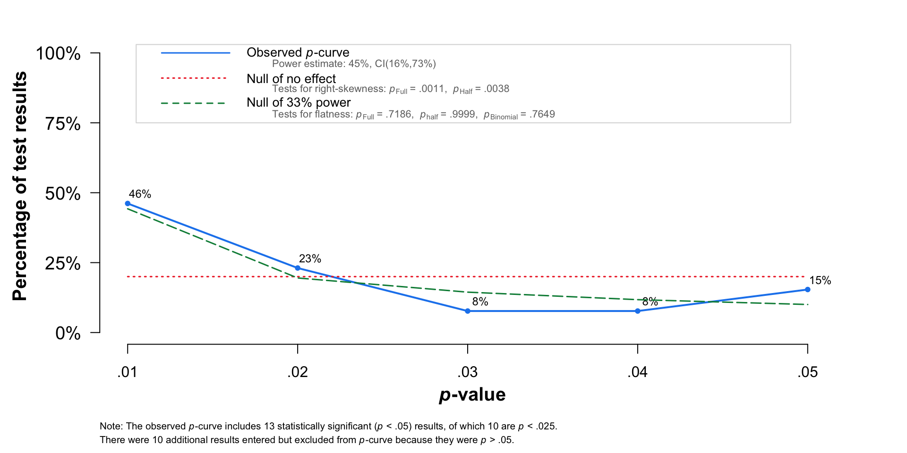
Interpreting the results of the pcurve method
Evidential value present: The right-skewness test is significant for the half p-curve (p< 0.05) or the p-value of the right-skewness test is <0.1 for both the half and full curve.
Evidential value absent or inadequate: The flatness test is significant with p<0.05 for the full curve or the flatness test for the half curve and the binomial test are p<0.1.
Limitations of bias-detection tests
- All tests have limitations and should not be interpreted in isolation.
- Their performance can depend on the number of studies, the sample sizes of the individual studies, between-study heterogeneity, and assumptions about the underlying publication bias process.
- A non-significant test does not necessarily indicate the absence of publication bias, and a significant test does not necessarily prove that publication bias is present.
- The best approach is to use triangulation: apply several bias-detection methods and consider whether they provide a consistent results
The assumption of independent effect sizes
Standard meta-analysis methods assume that effect-size estimates are independent
A common violation occurs when a study contributes multiple effect sizes
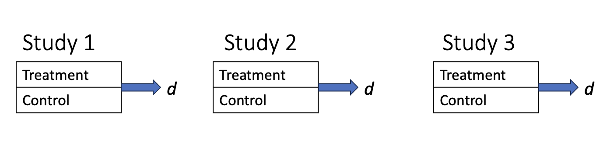
Dependent effect sizes are common in practice
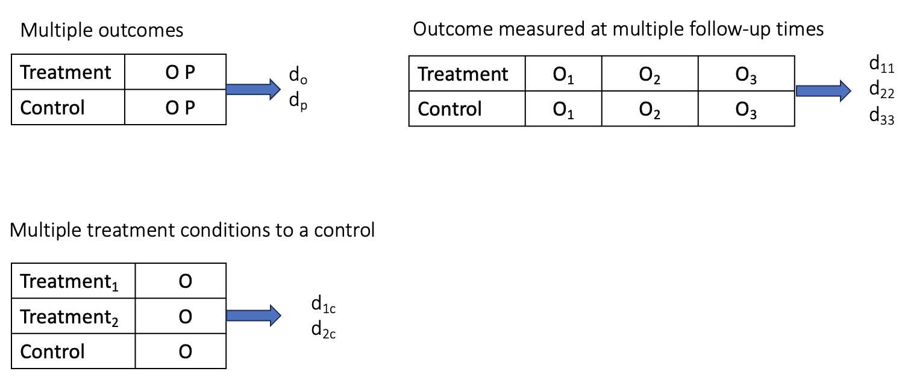
Why is dependence a problem?
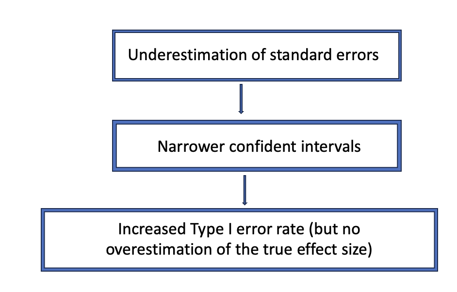
How to deal with dependent effect sizes?
If studies contribute multiple dependent effect sizes, a standard meta-analysis is inappropriate
Possible approaches include:
- Select one effect size per study
- Aggregate effect sizes
- The preferred approach is to use a multilevel meta-analysis, which accounts for the dependency between effect sizes
Influential and erroneous effect sizes
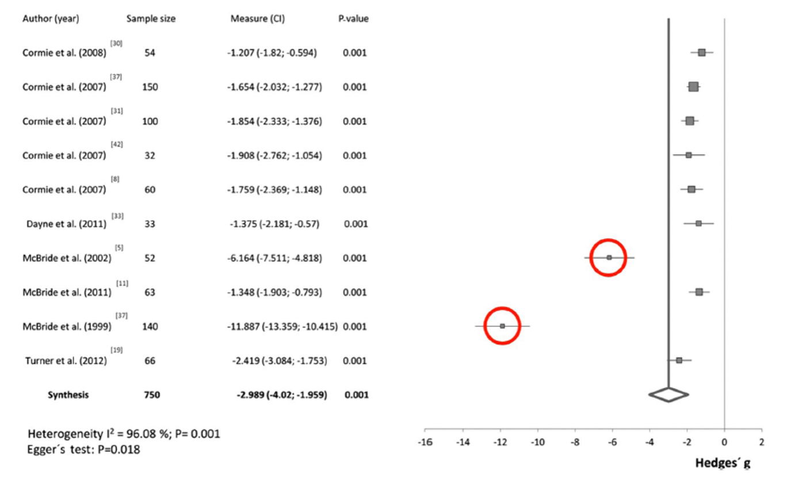
Before excluding an extreme effect size, investigate whether it reflects:
Measurement error
Data-entry or typing errors
Incorrect effect-size calculations
Other methodological differences
Incorrect effect-size calculations
Using SEM instead of SD
Correct ES calculation: \[d_s = \frac{\bar{x}_1 - \bar{x}_2}{SD} = \frac{14.4 - 13.8}{1.3} = 0.46\]
Incorrect ES calculation: \[SEM = \frac{SD}{\sqrt{N}}\]
\[d_s = \frac{14.4 - 13.8}{SEM} = \frac{14.4 - 13.8}{1.3 /\sqrt{40}} = 2.92\]
Consequences for the meta-analysis
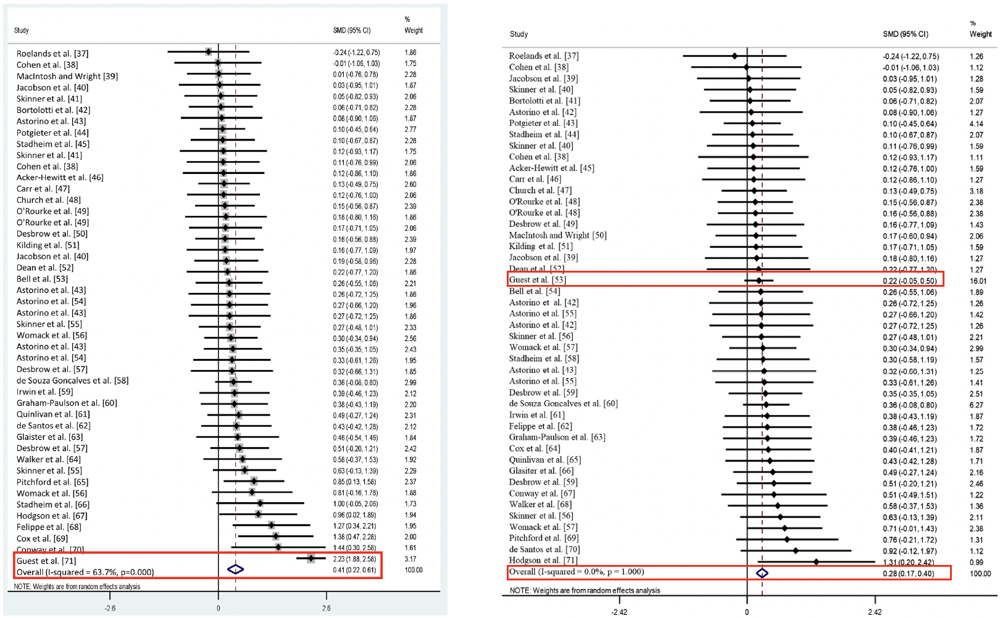
Further resources
Chapters from 3 to 9 from Doing a meta-analysis in R
Chapters 11 and 12 from Improving Your Statistical inferences